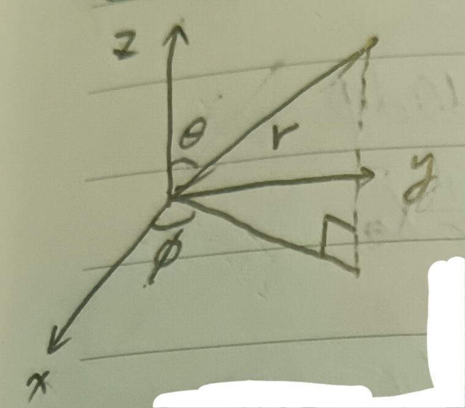
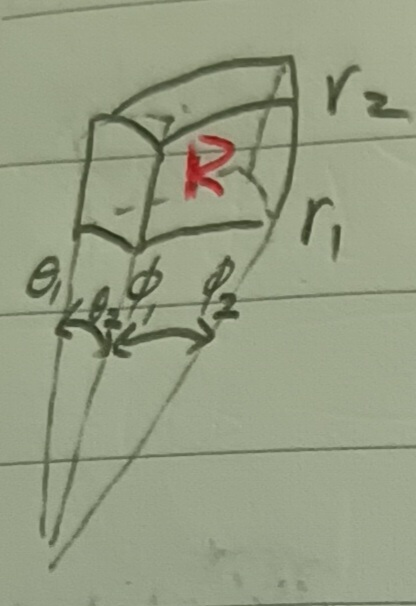

這份筆記是關於球座標的性質與應用。
球座標
定義 1：球座標 (Sphere Coordinate)
考慮 \[ x=r\cos\phi\sin\theta, y=r\sin\phi\sin\theta, z=r\cos\theta \] 其中\(0\leq r<\infty\), \(0\leq\phi\leq 2\pi\), \(0\leq\theta\leq\pi\)(因為\(\phi\)會繞一整圈所以\(\theta\)只須繞半圈，見下圖1)。
這種座標表示法稱為球座標。
註記 2：球座標上的積分
考慮如下圖2的區域 \[ R:r_1<r<r_2, \phi_1<\phi<\phi_2, \theta_1<\theta<\theta_2 \] 並令\(S\)為其邊界。
則\(R\)是一個有六面的形狀，每個面都被其中一個參數(有六個，即\(r_1,r_2,\phi_1,\phi_2,\theta_1,\theta_2\))所決定。則對於函數\(\Delta U\)，有 \[
\begin{aligned}
\iiint_R\Delta Udxdydz&=\iiint_R\Delta
U\frac{\partial(x,y,z)}{\partial(r,\phi,\theta)}drd\phi d\theta\\
&=\iiint_R\Delta Ur^2\sin\theta drd\phi d\theta\mbox{ (★)}
\end{aligned}
\] 考慮 \[
X=(x,y,z)=(r\cos\phi\sin\theta,r\sin\phi\sin\theta,r\cos\theta)
\] 我們可以算出\(X_r,X_\phi,X_\theta\)，易得 \[
\begin{aligned}
X_r\cdot X_\theta=X_\theta&\cdot X_\phi=X_\phi\cdot X_r=0\\
X_r\cdot X_r=1, X_\theta\cdot X_\theta&=r^2, X_\phi\cdot
X_\phi=r^2\sin\theta
\end{aligned}
\] 也就是說，給定一個\(r\)固定的曲面(i.e. 一小片球面)，則\(X_r\)會是此區面的法向量，\(X_\theta,X_\phi\)會是切平面上的向量。
於是，若我們可慮兩曲面\(r=r_1,
r=r_2\)，則指向外面的向量\(n\)為
\[
n=\epsilon X_r, \epsilon=\pm 1
\] (見下圖3)。
於是在這兩個曲面上 \[
\frac{dU}{dn}=(\mbox{grad }U)\cdot n=\epsilon(\mbox{grad }U)\cdot X_r
\] 因為\(n=\epsilon\frac{X_r}{|X_r|}\)且\(|X_r|=1\)，並且由鏈鎖律 \[
\epsilon(\mbox{grad }U)\cdot
X_r=\epsilon\left(U_x\frac{dx}{dr}+U_y\frac{dy}{dr}+U_z\frac{dz}{dr}\right)=U_r\mbox{
(☆)}
\] 又由於\(r\)是固定的，故由這裡的註記6我們可以計算出
\[
d\sigma=\sqrt{EG-F^2}d\theta d\phi=r^2\sin\theta d\theta d\phi
\] (計算過程略)。意即，在\(r_1<r<r_2\)上，\(\Delta U\)的積分是 \[
\iint_{r=r_2}r_2^2\sin\theta\frac{\partial U}{\partial r}d\theta
d\phi-\iint_{r=r_1}r_1^2\sin\theta\frac{\partial U}{\partial r}d\theta
d\phi=\iiint_{r_1<r<r_2}\frac{\partial}{\partial
r}\left(r^2\sin\theta\frac{\partial U}{\partial r}\right)drd\theta d\phi
\] (這來自上(☆)式和高斯定理，見這裡的例12-5)。
同理，在\(\theta=\theta_1\)和\(\theta=\theta_2\)兩面上，我們有法向量 \[
n=\epsilon\times\frac{1}{r}X_\theta
\] 且 \[
d\sigma=r\sin\theta d\phi dr,
\frac{dU}{dn}=\epsilon\cdot\frac{1}{r}\frac{\partial U}{\partial\theta}
\] 而在\(\phi=\phi_1\)和\(\phi=\phi_2\)兩面上，我們有法向量 \[
n=\frac{\epsilon}{r\sin\theta}X_\phi
\] 且 \[
d\sigma=rdrd\theta,
\frac{dU}{dn}=\frac{\epsilon}{r\sin\theta}\times\frac{dU}{d\phi}
\] 於是 \[
\begin{aligned}
\iint_S\frac{dU}{dn}d\sigma&=\iiint_R\left(\frac{\partial}{\partial
r}\left(r^2\sin\theta\frac{\partial U}{\partial
r}\right)+\frac{\partial}{\partial\theta}\left(\sin\theta\frac{\partial
U}{\partial\theta}\right)+\frac{\partial}{\partial\phi}\left(\frac{1}{\sin\theta}\frac{\partial
U}{\partial\phi}\right)\right)drd\phi d\theta
\end{aligned}
\]
定理 2-1：拉普拉斯算符的球座標表示法 (Sphere Coordinate Representation of Laplacian Operator)
令\(\Delta U\)是拉普拉斯算符\(\Delta U=U_{xx}+U_{yy}+U_{zz}\)，則在球座標上 \[ \Delta U=\frac{1}{r^2\sin\theta}\left(\frac{\partial}{\partial r}\left(r^2\sin\theta\frac{\partial U}{\partial r}\right)+\frac{\partial}{\partial\theta}\left(\sin\theta\frac{\partial U}{\partial\theta}\right)+\frac{\partial}{\partial\phi}\left(\frac{1}{\sin\theta}\frac{\partial U}{\partial\phi}\right)\right) \]
證明：由這裡的例12-5及上(★)式，我們有 \[ \iint_S\frac{dU}{dn}d\sigma=\iiint_R \Delta Ur^2\sin\theta drd\theta d\phi \] 對照註記2最後的結論，即得所求。QED